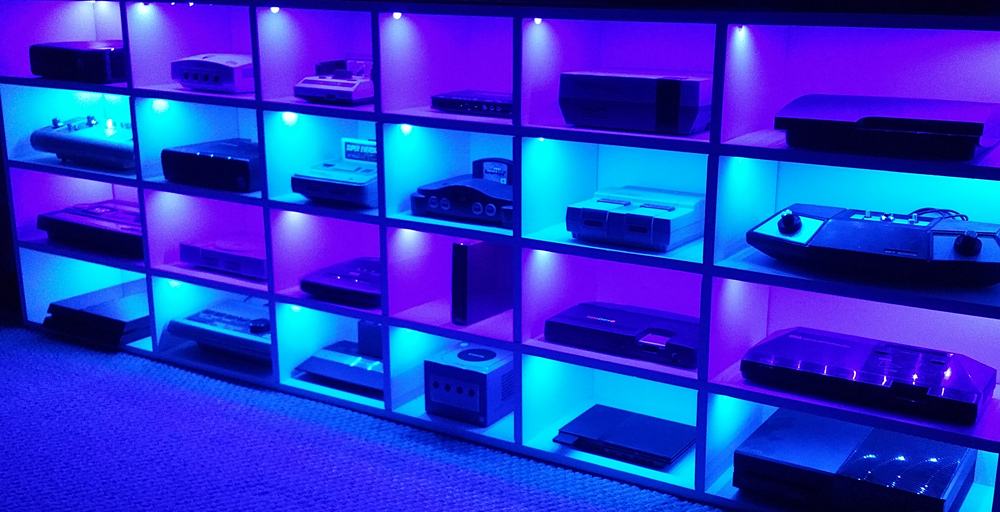

> OUR STORY
Pixel Futures Co. started with one question: why is it so hard to find a reliable place to buy retro consoles? Online marketplaces are inconsistent and unmoderated, and they rarely show what is really in stock. We wanted one organized place where collectors and casual buyers can see what a real shop has available.

> WHAT MAKES US DIFFERENT
- Organized inventory: every console and game lists its platform, condition, and price.
- Buy, sell, and trade: bring in your old systems or ask about a specific item.
- Retro focus: PlayStation 2, Nintendo Wii, GameCube, the original Xbox, and more.
> WHY RETRO?
Retro gaming keeps growing because these systems still deliver. Simple setups, local multiplayer, and games that hold up decades later make them as fun today as when they came out.

> MEET THE OWNER
Hi, I'm Irving Melendez, a lifelong gamer with a growing interest in game design and older consoles. I'm building Pixel Futures Co. as a brand rooted in nostalgia, made by someone who never really stopped loving retro gaming.